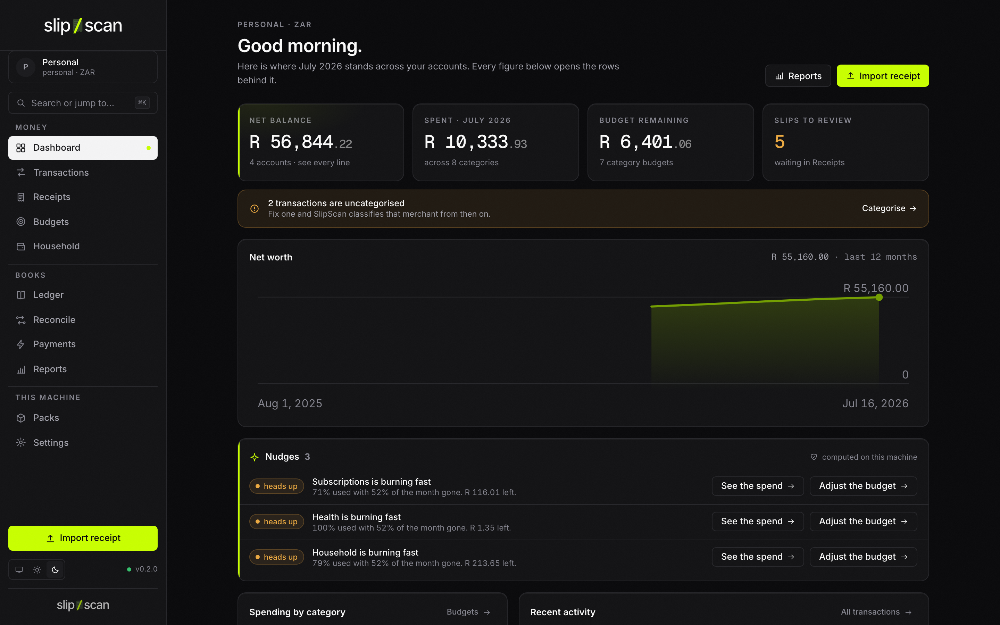

Self-hosted, decentralized personal finance & accounting. You are the server.
A Rust core over a local SQLite file, wrapped in a Tauri desktop app. Scan slips, ingest your inbox, scrape your own bank sessions, keep double-entry books — everything computed on your machine, credentials in your OS keychain, and community smarts shared as signed rule packs instead of pooled data. Global by default: anything country-specific ships as a region profile you pick — South Africa first, a generic profile for everywhere else.

Shown: the legacy design direction, not the shipped Tauri app — current screenshots are in progress.
Your money, on your machine
Vault22/22seven-class personal finance and Xero-class books — with the architecture inverted.
Slip extraction
Drop a receipt and get line items, per-line categories, discounts, and VAT (slip-v2). Bring your own LLM/OCR key or run a local model — extraction never touches a SlipScan-hosted endpoint, because there isn't one.
Your inbox as a pipeline
Connect your own mailbox — generic IMAP polling works today; Gmail, Microsoft 365, and IDLE/Pub/Sub push connectors are built and being wired up. Receipt attachments land straight in your books. Always your accounts, never a relay.
Bank sync, run locally
An open-source adapter framework runs on your machine — statement CSV parsing today, with a custom column mapping for any bank anywhere and ready-made presets per region (South African banks first); live scraper adapters on the roadmap. Credentials live in a write-only vault under your OS keychain — software can use them, nobody can view them.
Real double-entry books
Chart of accounts, balanced journals, tax rates and period summaries (your region profile names the return — VAT201 in South Africa), scored bank reconciliation, trial balance, CSV export. Personal or business books in one plain SQLite file. Opt-in multi-currency FX from a self-hosted OpenRate instance — provenance-graded rates, zero FX calls unless you configure an endpoint (on the CLI, server, and desktop today; converted report views being wired).
Signed community packs
Category taxonomies, merchant mappings, and classification rules travel as ed25519-signed, versioned packs over git or p2p — no central registry. Packs declare a region, or none and apply worldwide — a global starter pack ships builtin alongside the South African pair. Rules move, your data never does. (Signature-verified install works today; rule-driven auto-categorisation is being wired up.)
Nudges & anonymous benchmarks
A 100% local insight engine — budget drift, duplicate charges, and subscription detection ship today; more nudges and differentially-private peer benchmarks are designed and on the roadmap. Reading benchmarks will be perfectly private; contributing opt-in and anonymous.
Quick start
Build from source, make a book, feed it. No account to create — there is nothing to sign in to.
git clone https://github.com/vul-os/slipscan cd slipscan # create a book and import a statement file cargo run -p slipscan-cli -- init --name "Personal" --kind personal cargo run -p slipscan-cli -- import statement.csv # or run the desktop app cd apps/desktop && npm install && npm run tauri dev
- 1BuildRust toolchain + Node for the desktop shell. One workspace, no external services, no Docker, no database server.
- 2Create a bookYour books in one plain SQLite file, at a path you choose. Personal or business — the kind drives which features surface; a region profile carries everything country-specific, anywhere in the world.
- 3Feed itImport slips in the app, bring in statement files with the CLI, or poll a mailbox with
mail-sync. Everything reconciles locally.
Decentralized by design
Most finance apps are a honeypot with a UI. SlipScan removes the honeypot: there is no server side to breach, subpoena, or shut down.
No central server
No hosted service, no OAuth middleman, no webhook receiver, no telemetry. The app is fully functional offline; network egress goes only to endpoints you explicitly configured — your bank, your mailbox, your LLM provider.
Signed packs, not pooled data
Community knowledge ships as ed25519-signed rule packs distributed over git remotes or p2p and verified on install. Your corrections train your local classifier and stay on your disk.
Anonymous benchmarks
Peer comparison without a peer database: signed packs of aggregate statistics, computed against your data locally. Contribution is off by default — and when on, it is category-level aggregates with on-device differential-privacy noise, coarse k-anonymous cohorts, and anonymous transport.
Part of VulOS
VulOS is a family of open, self-hostable apps. SlipScan is a fully standalone product — it never requires VulOS infrastructure — and when siblings like wede or Relay are around, it connects to them peer-to-peer, device to device. No hub, no account, no coupling.
Explore VulOS →